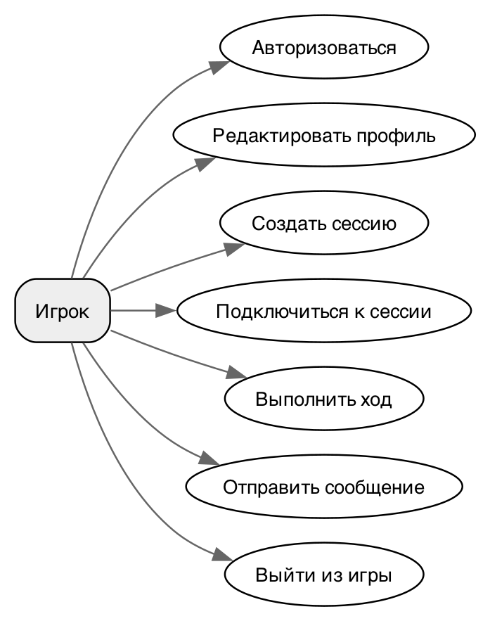
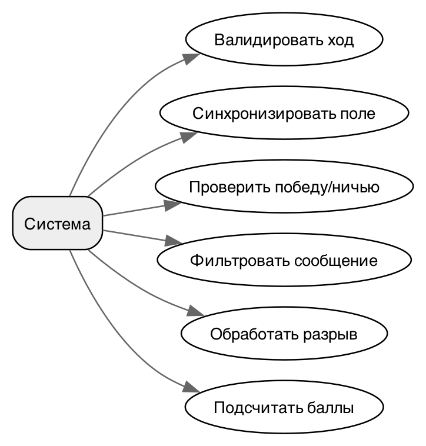
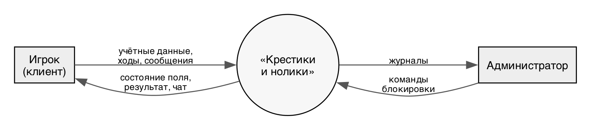
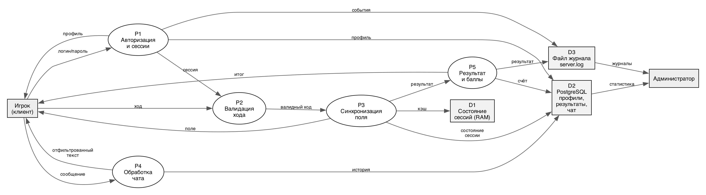
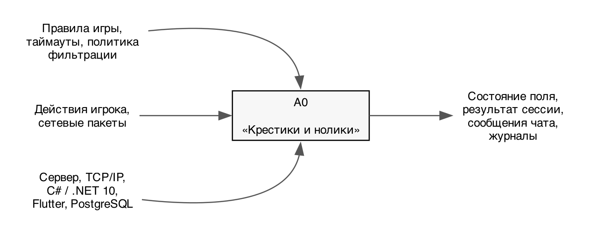
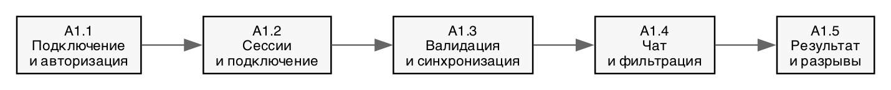

Анализ предметной области
Министерство науки и высшего образования Российской Федерации
Автономная некоммерческая организация профессиональная
образовательная организация Московский международный колледж
цифровых технологий «Академия ТОП»
Факультет Информационных систем и программирования
Кафедра Разработка программного обеспечения
| СОГЛАСОВАНО Руководитель проекта от кафедры, преподаватель _________ /Д. В. Золотухин / «___» ____________ 2026 г. | УТВЕРЖДАЮ Заведующий выпускающей кафедрой ________ / И. О. Фамилия / «___» ___________ 2026 г. |
|---|---|
АНАЛИЗ ПРЕДМЕТНОЙ ОБЛАСТИ
на разработку программного комплекса
«Крестики и нолики»
Код документа: АПО.001.2026
| Листов: 16 | Исполнители (разработчики): Студенты группы 9/3 – РПО 24/2 __________ / К. Д. Бызов/ «04» октября 2026 г. |
|---|---|
МОСКВА — 2026 г.
1. Общее описание предметной области и границ проекта
1.1. Характеристика предметной области
Предметная область проекта — организация многопользовательского сетевого взаимодействия в реальном времени. Система — программный комплекс с клиент-серверной архитектурой: серверная часть реализуется на языке C# с использованием платформы .NET 10, клиентская — на Flutter (Dart), хранение данных — в PostgreSQL, обмен — по протоколу TCP/IP в формате JSON.
Основное назначение системы — обеспечение надёжной синхронизации игрового состояния между двумя участниками сессии в классической игре «Крестики и нолики», а также организация сопутствующего текстового обмена (чат) с фильтрацией нежелательного контента. Дополнительно система обеспечивает авторизацию, ведение профилей, создание игровых сессий и подключение по идентификатору, автоматический подсчёт баллов и формирование итогового счёта.
Система функционирует в распределённой сетевой среде: каждый участник (клиент) подключается к центральному узлу (серверу) посредством постоянного сокетного соединения на базе протокола TCP/IP. Сервер выступает единственным источником истины относительно актуального состояния игрового поля. Клиентское приложение не принимает самостоятельных решений о допустимости игровых действий, а только формирует запросы и отображает результаты их обработки.
Оперативное состояние активных игровых сессий хранится в памяти сервера, а учётные записи, профили, результаты завершённых партий и история сообщений — в базе данных PostgreSQL. Такое разделение позволяет быстро обрабатывать ходы и одновременно сохранять данные после завершения партии.
Предметная область ограничена сетевыми партиями двух игроков на поле 25 × 25. Система не претендует на замену промышленных игровых платформ: её ценность — в наглядной демонстрации полного цикла клиент-серверного взаимодействия, включая авторизацию, создание сессии, синхронизацию состояния, чат и подсчёт результата. Все игровые действия проходят через сервер, поэтому клиент не может самостоятельно изменить поле или результат.
К предметной области относятся также профили игроков, статистика побед и поражений, итоговый счёт и история сообщений. Эти данные не участвуют в реальном времени, но необходимы для сохранения результата между партиями и отображения прогресса пользователя.
1.2. Границы проекта
В область проекта включено:
– игровое поле 25 × 25 и проверка условия победы «пять в ряд»;
– разработка серверной части (Backend) на C# / .NET 10 — обработка подключений, авторизация, создание сессий, валидация ходов, синхронизация поля, чат и подсчёт результата;
– разработка клиентской части (Frontend) на Flutter — экраны авторизации, лобби, игрового поля, чата, профиля и результатов;
– реализация транспортного уровня на базе TCP/IP с передачей JSON-сообщений;
– ведение профилей пользователей и хранение результатов партий в PostgreSQL;
– механизм фильтрации текстовых сообщений чата;
– обработка нештатных ситуаций: занятая клетка, ход не в очередь, выход игрока, разрыв соединения, некорректные пакеты;
– автоматический подсчёт баллов и формирование итогового счёта.
Из области проекта исключено:
– мини-игра для определения права первого хода;
– список друзей и социальные функции;
– игровые сессии более чем для двух участников;
– разработка трёхмерной графики и сложных игровых движков;
– интеграция с платёжными системами и внешними сервисами;
– администрирование физической серверной инфраструктуры.
1.3. Глоссарий и сокращения
В документе используются термины: клиент — приложение игрока; сервер — центральный узел, хранящий состояние; сессия — изолированная партия двух игроков; ход — координаты клетки, отправленные на сервер; DFD — диаграмма потоков данных; IDEF0 — функциональная модель; TCP/IP — транспортный протокол; JSON — формат обмена; PostgreSQL — система хранения данных.
Сокращения: ПК — персональный компьютер; БД — база данных; API — программный интерфейс; UI — пользовательский интерфейс; RAM — оперативная память. Термины используются в одном значении во всех разделах документа.
2. Заинтересованные стороны (стейкхолдеры)
На этапе анализа требований идентифицированы следующие заинтересованные стороны, взаимодействующие с системой.
Данные приведены в таблице 1.
Таблица 1 — Заинтересованные стороны системы
| № | Стейкхолдер | Роль в системе | Основные интересы |
|---|---|---|---|
| 1 | Игрок (клиент) | Конечный пользователь | Стабильное соединение, честная игра, удобный интерфейс |
| 2 | Администратор | Эксплуатация и контроль | Доступ к журналам, блокировка учётных записей |
| 3 | Разработчик | Сопровождение системы | Читаемость кода, документированность протокола |
Игрок — физическое лицо, запускающее клиентское приложение на Flutter. Проходит авторизацию, создаёт игровую сессию или подключается к ней, передаёт координаты выбранной клетки и отправляет сообщения в чат. Игрок — первичный источник входных данных.
Сервер — не стейкхолдер: это центральный компонент системы на C# / .NET 10. Он принимает входящие пакеты, проверяет учётные данные, валидирует ходы по правилам игры, обновляет состояние поля и рассылает его обоим участникам, а также выполняет фильтрацию сообщений и подсчёт результата.
Администратор — пользователь с расширенными привилегиями. Просматривает журналы событий и блокирует учётные записи через командную строку; отдельной панели администратора и управления активными сессиями не предусмотрено.
Разработчик — специалист, сопровождающий серверную и клиентскую части. Использует документацию по протоколу и структуре базы данных.
Стейкхолдеры взаимодействуют через разные каналы: игрок — через клиентское приложение и чат; сервер — через сетевые сокеты и базу данных; администратор — через командную строку, журналы и PostgreSQL; разработчик — через исходный код, схему БД и протокол. Такое разделение важно для анализа требований: интерфейс игрока не должен зависеть от административных функций, а сервер обязан оставаться единственным источником истины.
3. Обзор существующих решений (аналоги)
Анализ предметной области включает обзор существующих программных продуктов аналогичного класса для обоснования архитектурных решений разрабатываемой системы.
3.1. Промышленные сетевые фреймворки (Photon Engine, Mirror Networking)
Преимущества:
– высокая масштабируемость и поддержка большого числа одновременных соединений;
– встроенные механизмы компенсации задержек и синхронизации;
– готовые решения для управления комнатами и matchmaking.
Недостатки:
– избыточный функционал для двухпользовательской игры «Крестики и нолики»;
– высокий порог вхождения и необходимость адаптации под учебный проект;
– зависимость от сторонней инфраструктуры.
3.2. Браузерные многопользовательские реализации на WebSocket
Преимущества:
– кроссплатформенность без установки клиентского приложения;
– мгновенный запуск через браузер;
– широкая доступность для пользователей.
Недостатки:
– отсутствие полноценных профилей и истории результатов;
– ограниченные возможности фильтрации контента на прикладном уровне;
– зависимость от стабильности браузерного соединения.
3.3. Позиционирование разрабатываемой системы
Разрабатываемая система занимает промежуточную нишу. В отличие от промышленных сетевых фреймворков она проектируется под конкретную предметную область без избыточных абстракций. В отличие от браузерных реализаций она обеспечивает профили пользователей, создание игровых сессий и подключение по идентификатору, сохранение результатов в базе данных и серверную фильтрацию сообщений. При этом система остаётся достаточно простой для реализации в рамках учебного проекта.
Сравнение аналогов проводилось по критериям: наличие сетевой партии, профилей, чата, фильтрации, серверной валидации и сложность развёртывания. Промышленные фреймворки выигрывают по масштабируемости, но проигрывают по простоте; браузерные реализации выигрывают по доступности, но обычно не имеют профилей и серверной фильтрации. Разрабатываемая система занимает нишу между ними: она проще промышленных платформ, но функциональнее типовых браузерных игр.
3.4. Выводы по аналогам
Проведённый обзор показывает, что промышленные сетевые фреймворки избыточны для двухпользовательской игры, а браузерные реализации обычно не обеспечивают профили, серверную валидацию и фильтрацию сообщений. Разрабатываемая система занимает промежуточное положение: она достаточно проста для сопровождения, но реализует полный набор функций, необходимых для оценки 5 в одиночной разработке.
Выбранный стек C# / Flutter / PostgreSQL позволяет показать и сетевую логику, и современный интерфейс, и хранение данных. Благодаря этому проект показательным для дисциплины «Технология разработки программного обеспечения» и удобным для демонстрации на защите.
4. Информационное и функциональное моделирование
Для формализованного описания процессов системы применяется комплекс CASE-технологий структурного анализа: методология функционального моделирования IDEF0, методология анализа потоков данных DFD, а также диаграммы вариантов использования UML Use Case.
4.1. Диаграмма вариантов использования (UML Use Case)
Диаграмма вариантов использования описывает внешнее поведение системы глазами её актёров. Основной актёр — Игрок; функции серверной части показаны как варианты использования системы.
Схема приведена на рисунке 1.

Рисунок 1 — Варианты использования актёра «Игрок»
Схема приведена на рисунке 2.

Рисунок 2 — Функции серверной части системы
Основные варианты использования и сценарии их выполнения приведены в таблице 2.
Таблица 2 — Варианты использования системы
| Актёр | Вариант использования | Предусловие | Основной поток | Постусловие |
|---|---|---|---|---|
| Игрок | Авторизоваться | Клиент запущен, сеть доступна | 1. Вводит логин и пароль. 2. Сервер проверяет данные. 3. Клиент получает профиль. | Игрок авторизован, открыто главное меню |
| Игрок | Редактировать профиль | Игрок авторизован | 1. Открывает профиль. 2. Изменяет данные. 3. Сохраняет. | Профиль обновлён в базе данных |
| Игрок | Создать игровую сессию | Игрок авторизован | 1. Создаёт комнату. 2. Сервер присваивает идентификатор. 3. Ожидает соперника. | Сессия создана, игрок — хост |
| Игрок | Подключиться к сессии | Сессия существует | 1. Вводит идентификатор. 2. Устанавливается TCP-соединение. 3. Получает состояние поля. | Оба игрока в активной сессии |
| Игрок | Выполнить ход | Очередь хода принадлежит игроку | 1. Выбирает клетку. 2. Клиент отправляет координаты. 3. Сервер валидирует и рассылает поле. | Поле обновлено у обоих, очередь передана |
| Игрок | Отправить сообщение | Игрок в активной сессии | 1. Вводит текст. 2. Клиент отправляет. 3. Сервер фильтрует и рассылает. | Сообщение отображается у обоих |
| Игрок | Выйти из игры | Игрок в активной сессии | 1. Нажимает «Выйти». 2. Сервер уведомляет соперника. | Продолжение партии заблокировано |
| Система | Валидировать ход | — | Проверка координат, занятости клетки и очерёдности. | Валидный ход или код ошибки |
| Система | Синхронизировать поле | — | Обновление состояния и рассылка обоим клиентам. | Актуальное поле у обоих |
| Система | Проверить победу и ничью | — | Проверка линий из пяти символов по горизонтали, вертикали и диагонали, а также свободных клеток. | Статус партии |
| Система | Фильтровать сообщение | — | Нормализация текста и замена запрещённых слов. | Отфильтрованный текст |
| Система | Подсчитать баллы | Партия завершена | Начисление баллов и запись результата в PostgreSQL. | Итоговый счёт сохранён |
| Система | Обработать разрыв | — | Фиксация потери связи, уведомление соперника, завершение сессии. | Сессия корректно завершена |
Детализация вариантов использования показывает, что авторизация и создание сессии выполняются один раз, а ход и сообщение чата — многократно в течение партии. Для каждого варианта определены предусловие, основной поток и постусловие; ошибочные ветви возвращают клиенту код и не изменяют состояние поля. За счёт этого проще строить тестовых сценариев и проверку граничных случаев.
4.2. Диаграммы потоков данных (DFD)
4.2.1. Контекстная диаграмма DFD (уровень 0)
На контекстном уровне вся система представлена единым функциональным блоком «Программный комплекс „Крестики и нолики“», взаимодействующим с внешними сущностями.
Схема приведена на рисунке 3.

Рисунок 3 — DFD, контекстная диаграмма (уровень 0)
4.2.2. Декомпозиция DFD (уровень 1)
На первом уровне декомпозиции центральный блок раскрывается в совокупность взаимосвязанных процессов.
Внешние сущности:
– [E1] Клиентское приложение (Игрок) — источник и потребитель данных;
– [E2] Администратор — потребитель журналов и статистики.
Функциональные процессы:
– [P1] Авторизация и управление сессиями — проверка учётных данных, создание и закрытие игровых комнат;
– [P2] Валидация хода — проверка координат, занятости клетки и очерёдности;
– [P3] Синхронизация поля — обновление состояния и рассылка обоим участникам;
– [P4] Обработка чата — приём текста, фильтрация и рассылка;
– [P5] Результат и баллы — проверка победы/ничьей, начисление баллов, запись в БД.
Хранилища данных:
– [D1] Оперативное состояние сессий — текущее поле, очередь хода (RAM сервера);
– [D2] PostgreSQL — профили, результаты партий, история сообщений.
– [D3] Файл журнала /app/logs/server.log — события, ошибки, неудачные попытки входа.
Схема приведена на рисунке 4.

Рисунок 4 — DFD, уровень 1 (декомпозиция)
Основные потоки данных системы приведены в таблице 3.
Таблица 3 — Основные потоки данных
| Поток | Источник | Приёмник | Содержание |
|---|---|---|---|
| Запрос авторизации | [E1] | [P1] | Логин и пароль |
| Данные профиля | [P1] | [E1] | Идентификатор, никнейм, статистика |
| Создание сессии | [E1] | [P1] | Параметры игровой комнаты |
| Идентификатор сессии | [P1] | [E1] | Номер комнаты и никнейм хоста |
| Пакет хода | [E1] | [P2] | Координаты клетки (строка, столбец) |
| Валидированный ход | [P2] | [P3] | Координаты и символ игрока |
| Состояние поля | [P3] | [E1] | Снимок поля, очередь, статус партии |
| Сообщение чата | [E1] | [P4] | Текст и идентификатор отправителя |
| Отфильтрованный текст | [P4] | [E1] | Текст без запрещённых слов |
| Результат партии | [P3] | [P5] | Победитель или ничья |
| Запись результата | [P5] | [D2] | Баллы, статистика, итог |
| Журнал событий | [P1]–[P5] | [D3] | Записи о событиях и ошибках |
На уровне DFD процесс валидации хода разделён на приём пакета, проверку координат и очереди, обновление поля, проверку победы и рассылку состояния. Такое разделение позволяет локализовать ошибки: если поле не обновилось у соперника, проблема находится на этапе рассылки, а не валидации. Хранилище D1 содержит оперативное состояние сессий, D2 — профили и историю, D3 — файл журнала.
4.3. Функциональная модель IDEF0
Методология IDEF0 применяется для отображения структуры и функций системы с соблюдением правила ICOM и иерархии декомпозиции.
4.3.1. Контекстная диаграмма IDEF0 (A-0)
Схема приведена на рисунке 5.

Рисунок 5 — IDEF0, контекстная диаграмма A-0
Входы: действия игрока (выбор клетки, сообщения чата, запросы на подключение), сетевые пакеты. Управление: правила игры, регламент таймаутов, политика фильтрации, требования безопасности. Механизмы: серверное оборудование, TCP/IP, C# / .NET 10, Flutter, PostgreSQL. Выходы: состояние поля, результат сессии, сообщения чата, журналы.
4.3.2. Декомпозиция A1
Схема приведена на рисунке 6.

Рисунок 6 — IDEF0, декомпозиция A1
Декомпозиция центральной функции A0 приведена в таблице 4.
Таблица 4 — Декомпозиция функции A0
| Блок | Функция | Вход | Управление | Выход | Механизм |
|---|---|---|---|---|---|
| A1.1 | Подключение и авторизация | Логин, пароль | Учётные данные, права | Профиль, идентификатор соединения | TCP-сокет, PostgreSQL |
| A1.2 | Сессии и подключение по идентификатору | Запрос комнаты | Правила сессий | Идентификатор сессии | Серверная логика, RAM |
| A1.3 | Валидация и синхронизация | Координаты клетки | Правила игры, очередь | Новое поле, ошибка | Модуль валидации, RAM |
| A1.4 | Чат и фильтрация | Текст сообщения | Словарь запрещённых слов | Отфильтрованный текст | ChatService |
| A1.5 | Результат и разрывы | Статус партии, сигнал таймаута | Правила начисления баллов | Итог, запись в БД | ScoreService, PostgreSQL |
4.3.3. Декомпозиция блока A1.3
Связи ICOM для блока A1.3: вход — координаты клетки и идентификатор сессии; управление — правила игры, очередь хода и диапазон 0–24; выход — новое состояние поля или код ошибки; механизм — модуль валидации, GameBoard и TCP-сокет. Для блока A1.5 управлением служат правила начисления баллов, входом — результат партии и сигнал таймаута, выходом — запись в PostgreSQL и итоговое сообщение клиентам.
5. Анализ рисков и нештатных ситуаций
Специфика сетевого программирования требует описания аварийных сценариев и механизмов реагирования на них.
5.1. Матрица рисков
Матрица рисков приведена в таблице 5.
Таблица 5 — Матрица рисков и нештатных ситуаций
| № | Нештатная ситуация | Вероятность | Критичность | Стратегия реагирования |
|---|---|---|---|---|
| R1 | Разрыв соединения с клиентом во время партии | Высокая | Высокая | Фиксация потери связи, уведомление соперника, корректное завершение сессии |
| R2 | Выход игрока из партии | Средняя | Высокая | Блокировка продолжения партии, уведомление соперника |
| R3 | Ход в занятую клетку | Высокая | Средняя | Сервер отклоняет пакет и возвращает код ошибки |
| R4 | Ход не в свою очередь | Средняя | Средняя | Сервер отклоняет пакет, фиксирует событие в журнале |
| R5 | Некорректный сетевой пакет | Средняя | Высокая | Сервер отклоняет пакет, не завершая процесс аварийно |
5.2. Обработка разрыва соединения
Сервер контролирует активность соединения: клиент присылает ping каждые 15 секунд, а соединение без сообщений в течение 60 секунд закрывается. При потере связи сессия переводится в состояние Cancelled, соперник получает уведомление opponent_left, продолжение партии блокируется, а игровые ресурсы освобождаются. Баллы при отмене не начисляются. Автоматическое переподключение к начатой партии не поддерживается.
При выходе игрока по команде «Выйти» применяется тот же сценарий: сервер уведомляет соперника, фиксирует отмену в GameSessions и очищает идентификатор сессии у обоих участников.
5.3. Требования к транспортному уровню
В качестве транспортного протокола выбран TCP/IP. В отличие от UDP, он гарантирует доставку и сохранение порядка байт, что критично для авторизации, передачи ходов и сообщений чата. Поскольку TCP не сохраняет границы сообщений, применяется разделение JSON-сообщений по символу конца строки: приёмник буферизует данные до обнаружения «\n» и передаёт десериализатору строго один целостный пакет. Постоянное соединение снижает накладные расходы на повторное установление связи.
Наиболее вероятные нештатные ситуации: разрыв связи во время хода, выход игрока, ход в занятую клетку, нарушение очереди и некорректный пакет. Для каждой ситуации определена стратегия: уведомить соперника, заблокировать продолжение, вернуть код ошибки или завершить сессию. Сервер не должен аварийно завершаться из-за действий одного клиента.
5.4. Сценарии отмены и восстановления
При разрыве связи сервер фиксирует потерю клиента, уведомляет соперника и переводит сессию в состояние Cancelled. Автоматическое восстановление соединения и возврат в ту же партию не выполняются: игрок может войти заново и создать новую сессию. При выходе игрока по команде «Выйти» применяется тот же сценарий.
При некорректном пакете сервер возвращает код ошибки и продолжает обслуживание соединения; при повторных нарушениях клиент отключается. При аварийном завершении серверного процесса активные сессии не восстанавливаются — это ограничение текущей версии. Результат отменённой партии в GameResults не записывается и баллы не изменяет.
6. Сводная таблица требований
Требования к системе сформированы на основании Технического задания и приведены в таблице 6.
Таблица 6 — Требования к системе
| Пункт ТЗ | Требование | Приоритет |
|---|---|---|
| 4.1, прил. 1 | Игровое поле 25 × 25 и победа по пяти символам в ряд | Высокий |
| 4.1 | Авторизация пользователей | Высокий |
| 4.1 | Чат между двумя пользователями | Высокий |
| 4.1 | Фильтрация нецензурных слов | Средний |
| 4.1 | Автоматический подсчёт баллов и итоговый счёт | Средний |
| 4.1 | Создание игровых сессий и подключение по идентификатору | Высокий |
| 4.1 | Сохранение и синхронизация состояния поля | Высокий |
| 4.1 | Создание и редактирование профиля | Средний |
| 4.1 | Отображение клиентом актуального поля | Высокий |
| 4.1 | Обработка входных данных (учётные данные, сообщения, ходы) | Высокий |
| 4.1 | Формирование выходных данных (поле, результат, чат) | Высокий |
| 4.1 | Передача изменений в режиме реального времени | Высокий |
| 4.2 | Блокировка некорректных действий пользователя | Высокий |
| 4.2 | Одновременное подключение нескольких пользователей | Средний |
| 4.4 | Соответствие требованиям к техническим средствам | Средний |
| 4.5 | Клиент Windows 10/11, сервер Docker, C# / .NET 10, TCP/IP | Высокий |
Приоритеты требований распределены так: критичны авторизация, создание сессии, валидация хода, синхронизация поля и определение победителя; чат и фильтрация важны для оценки 5, но не блокируют базовую партию; профиль и статистика дополняют пользовательский сценарий. Такая расстановка позволяет проверять систему поэтапно и фиксировать прогресс.
6.1. Порядок реализации
Порядок разработки задаётся приоритетами: сначала ядро игровой логики (ход, очередь, победа, ничья), затем сетевое взаимодействие и синхронизация поля, после этого чат с фильтрацией, профиль и статистика. Такой порядок позволяет на каждом этапе иметь работоспособный сценарий и проверять его тестами до добавления дополнительных функций.
7. Заключение
При анализе предметной области определена структура разрабатываемого программного комплекса «Крестики и нолики», выделены границы проекта, стейкхолдеры и основные аналоги. Построены модели Use Case, DFD и IDEF0, описывающие взаимодействие клиента и сервера, потоки данных и декомпозицию функций.
Выбранная клиент-серверная архитектура обеспечивает централизованное управление игровыми сессиями, синхронизацию состояния поля и устойчивость к некорректным действиям пользователей. Сервер C# / .NET 10 отвечает за валидацию ходов и рассылку состояния, клиент Flutter — за отображение интерфейса, PostgreSQL — за хранение профилей и результатов.
Матрица рисков и сводная таблица требований задают основу для проектирования архитектуры, разработки алгоритмов и последующего тестирования. Результаты анализа используются при подготовке пояснительной записки, описания программы и программы испытаний.
Дальнейшие этапы проекта: проектирование структур данных и классов, разработка алгоритмов, реализация серверной и клиентской частей, тестирование и оформление эксплуатационной документации.